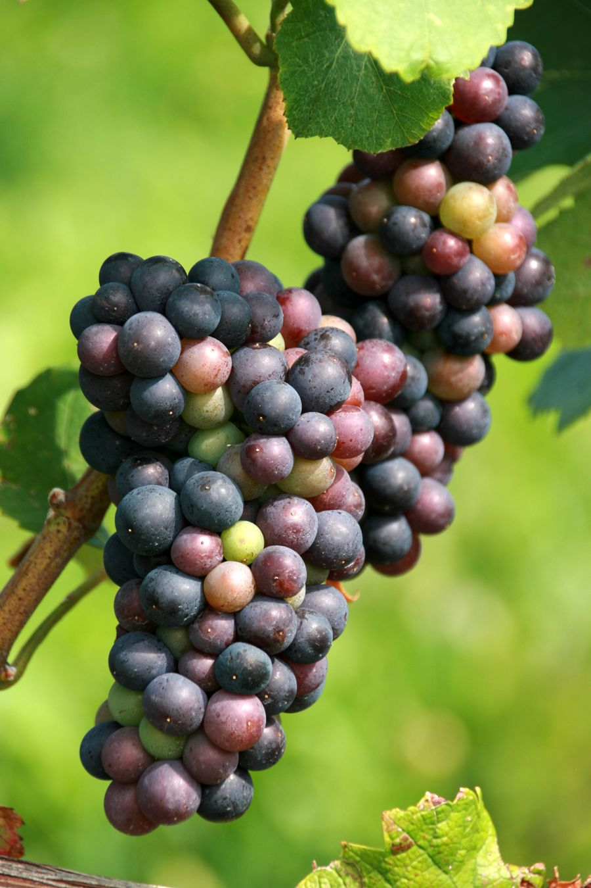
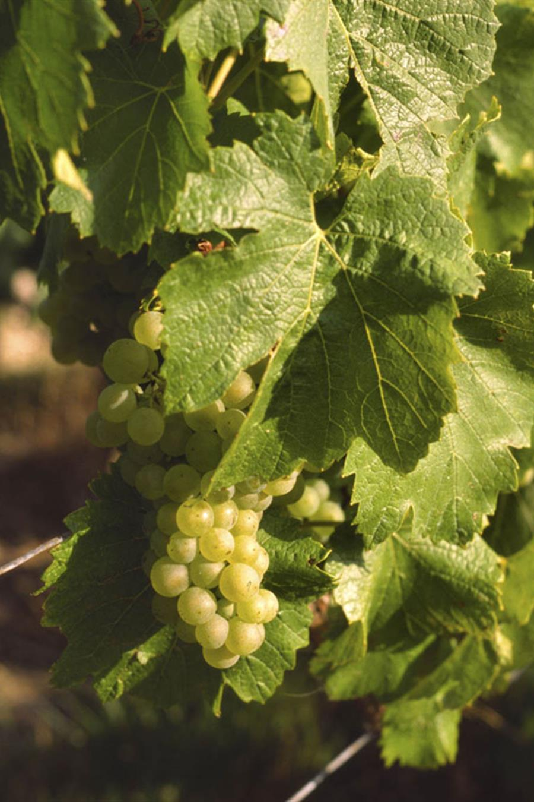
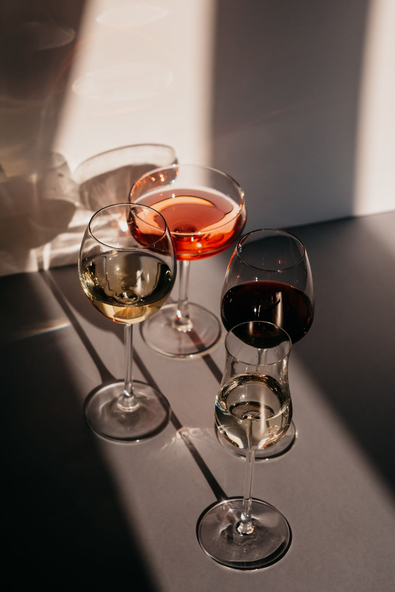
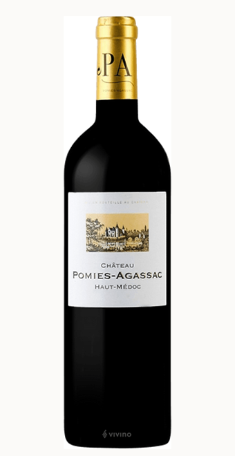
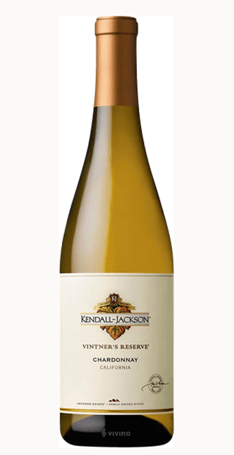
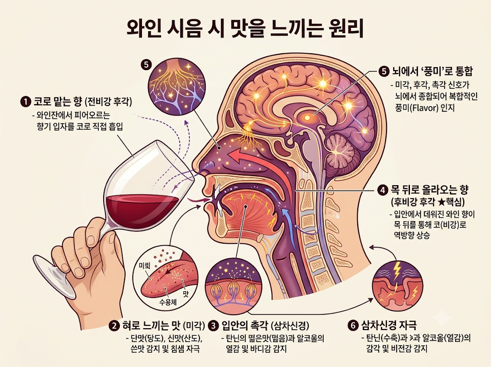
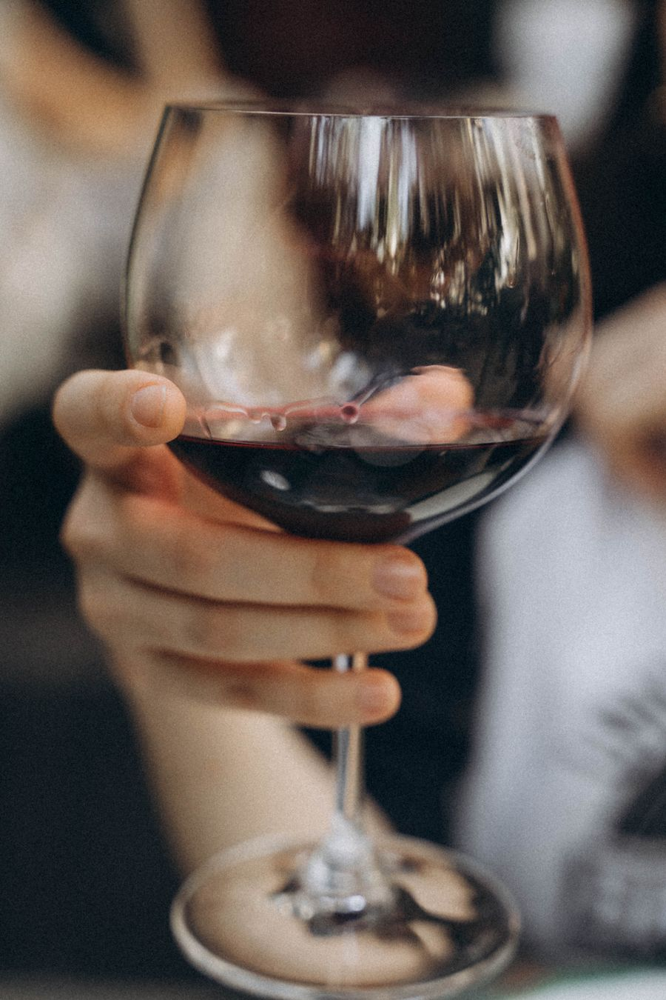
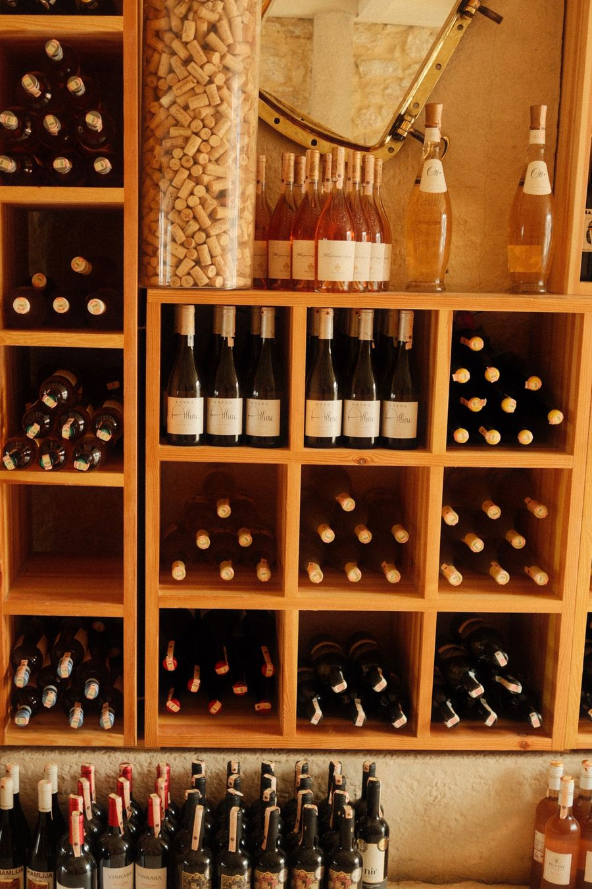

와인은 크게 포도를 어떻게 짰는가(색상)와 어떤 특수 공정을 거쳤는가(스타일)로 나뉩니다. 이 두 축만 잡아 두면 와인 리스트의 90%는 자리를 찾습니다.
1. 색깔에 따른 분류 — 양조 과정의 차이
레드와 화이트를 가르는 것은 포도의 색이 아니라 껍질을 언제 분리하는가입니다. 같은 검은 포도로도 껍질을 얼마나 오래 함께 두느냐에 따라 레드가 되고 로제가 됩니다.

검은 포도레드 · 로제 와인의 원료

청포도 · 샤르도네프랑스 아비즈(Avize), 샹파뉴 — 블랑 드 블랑의 심장부
표 1-1의 양조 흐름. 레드와 로제는 원료가 같은 검은 포도이며, 차이는 껍질·씨를 발효통에 얼마나 오래 남겨 두는지 하나뿐입니다.
🍷 레드 와인 (Red Wine)
핵심 특징 — 포도 껍질에서 우러나온 붉은 색소와, 잇몸을 조이는 떫은맛인 탄닌(Tannin)이 특징입니다. 추천 페어링 — 스테이크, 양갈비, 불고기 등 기름지고 묵직한 육류 요리. 탄닌이 기름기를 잡아줍니다.
🥂 화이트 와인 (White Wine)
핵심 특징 — 껍질을 제거하고 발효해 탄닌이 거의 없으며, 침샘을 자극하는 상큼한 산미(Acidity)가 돋보입니다. 추천 페어링 — 생선회, 석화(굴), 조개찜, 샐러드 등 신선한 해산물 및 가벼운 요리.
🌸 로제 와인 (Rosé Wine)
핵심 특징 — 레드와 화이트의 장점을 결합한 와인으로, 차갑게 칠링해서 마시면 어떤 음식과도 두루 잘 어울립니다.

같은 조명 아래 놓인 화이트 · 로제 · 레드. 색의 짙기만으로도 어떤 와인인지 짐작할 수 있습니다.
2. 스타일에 따른 4대 분류
표 1-2. 스타일별 분류와 국가별 대표 명칭
스타일 분류
핵심 원리 및 특징
국가별 대표 명칭 및 예시
1. 스틸 와인Still Wine
탄산이 전혀 없는 가장 일반적인 와인
우리가 흔히 마시는 대부분의 레드 · 화이트 · 로제 와인
2. 스파클링 와인Sparkling Wine
병 속(또는 탱크)에서 2차 발효를 거쳐 탄산가스를 가둔 발포성 와인
프랑스 샴페인(샹파뉴 지역), 크레망(그 외 8개 지역) · 이탈리아 스푸만테(강한 탄산), 프리잔테(약한 탄산), 프로세코 · 스페인 까바(Cava)
3. 주정강화 와인Fortified Wine
발효 중 또는 후에 포도 증류주(브랜디)를 첨가해 도수(17~20%)를 높인 와인
포르투갈 포트(Port), 마데이라(Madeira) · 스페인 셰리(Sherry) · 이탈리아 마르살라(Marsala) · 프랑스 남부 뱅 두 나투렐(Vin Doux Naturel)
4. 디저트 와인Dessert Wine
포도의 당도를 농축하거나 발효를 인위적으로 중단해 달콤한 잔당을 남긴 와인
늦수확(Late Harvest) / 귀부 와인 / 아이스 와인 · 건조 포도 방식 이탈리아 아파시멘토, 아마로네
네 스타일은 서로 다른 와인이 아니라, 스틸 와인에 무엇을 더하거나 바꾸는지로 갈라집니다 — 탄산을 가두면 스파클링, 브랜디로 도수를 올리면 주정강화, 당분을 남기면 디저트 와인입니다.
🥂 스파클링 와인 (Sparkling Wine)
핵심 특징 — 병이나 탱크 안에 갇힌 탄산가스가 잔에 따르는 순간 기포로 터져 나옵니다. 샴페인처럼 전통 방식(병 내 2차 발효)으로 만들수록 기포가 가늘고 오래 유지되며, 탱크에서 한꺼번에 발효하는 프로세코 방식은 기포가 조금 더 굵고 가볍게 느껴집니다. 추천 페어링 — 튀김, 초밥처럼 기름지거나 짭짤한 음식. 톡 쏘는 탄산이 입안을 개운하게 씻어 줍니다.
🥃 주정강화 와인 (Fortified Wine)
핵심 특징 — 발효 중이나 후에 포도 증류주(브랜디)를 더해 도수를 17~20%까지 끌어올립니다. 도수가 높아 산화에 강하다 보니, 개봉 후에도 6장에서 본 것처럼 한 달 가까이 두고 조금씩 마실 수 있습니다. 추천 페어링 — 견과류, 블루치즈, 다크 초콜릿처럼 향이 진한 디저트나 안주.
🍯 디저트 와인 (Dessert Wine)
핵심 특징 — 포도의 당분을 그대로 남기거나 더 농축해 단맛을 살린 와인입니다. 포도를 일부러 늦게 따거나(Late Harvest), 짚이나 채반 위에서 건조시키거나(아파시멘토), 귀부균이 포도알의 수분만 날려 당도를 확 끌어올리는 방식(귀부 와인)까지 방법은 다양합니다. 추천 페어링 — 와인 자체가 이미 디저트에 가까우니, 블루치즈나 아주 담백한 과일 디저트 정도만 곁들여도 충분합니다.
2장
포도 품종과 양조의 과학 : 맛과 향의 비밀
와인의 맛은 포도가 가져온 것(1차 향)과 양조가 더한 것(2·3차 향)의 합입니다. 품종표를 외우기 전에, 발효라는 한 줄짜리 공식부터 보겠습니다.
와인이 만들어지는 기본 공식
효모가 당분을 알코올로 바꾸고, 그 부산물로 탄산가스와 열이 나옵니다. 바디감은 입안에서 느껴지는 무게감으로, 알코올 함량이 높을수록, 당분이 많을수록 묵직해집니다.
알코올 함량 — 와인의 숨은 지휘자
라벨 한쪽에 작게 적힌 알코올 도수(ABV, Alcohol by Volume)는 발효 중 효모가 포도당을 얼마나 알코올로 바꿨는지를 보여주는 숫자입니다. 포도가 햇빛을 많이 받아 당분이 높게 여물수록, 그리고 발효를 끝까지 진행할수록 도수는 올라갑니다.
도수는 단순히 "취하는 정도"가 아니라 맛의 체감에도 직접 관여합니다. 도수가 높을수록 입안에서 느껴지는 무게감(바디감)이 커지고, 삼킨 뒤 목 안쪽이 살짝 뜨거워지는 듯한 느낌도 강해집니다. 반대로 도수가 낮은 와인은 가볍고 산뜻하게 넘어갑니다. 그래서 같은 레드 와인이라도 피노 누아(12~13%)와 진판델(14~15%)을 나란히 마셔 보면 무게감의 차이가 도수만으로도 꽤 크게 느껴집니다.
와인 스타일별 일반적인 알코올 도수 구간입니다. 디저트 · 주정강화 와인(6장)이 유독 도수가 높은 것은 발효 중 브랜디를 더하거나 당분을 농축하기 때문입니다.
와인을 읽는 다섯 가지 축
시음 노트나 와인 숍의 설명표에 빠짐없이 등장하는 다섯 단어입니다. 뜻만 알아 둬도 라벨 뒷면이나 리뷰의 절반은 해석됩니다.
01
바디감 Body
입안에 머금었을 때 느껴지는 와인의 무게감입니다. 물처럼 가벼운지, 우유처럼 매끈한지, 생크림처럼 진득한지를 떠올리면 쉽습니다. 알코올 도수가 높을수록, 당분과 포도 자체의 농축도가 높을수록 입안에서 더 묵직하게 느껴집니다.
느끼는 곳입천장 전체를 덮는 질감
알아보는 팁잔을 살짝 돌린 뒤 벽을 타고 흘러내리는 ‘와인의 눈물’이 느리고 굵을수록 바디가 무거운 편입니다
02
탄산 Carbonation
병이나 탱크 안에 가둔 CO₂가 잔에 따르는 순간 기포로 빠져나오는 것입니다. 사실 미각이 아니라 혀를 콕콕 찌르는 촉각 자극으로, 스틸 와인은 0, 스파클링 와인은 가장 강합니다.
느끼는 곳혀 표면을 쏘는 따끔거림
알아두면 좋은 점기포가 가늘고 오래갈수록 1장의 전통 방식(병 내 2차 발효)으로 만들었을 가능성이 큽니다
03
당도 Sweetness
발효가 끝난 뒤 와인에 남은 잔당(알코올로 바뀌지 않고 남은 포도당)의 양입니다. 효모가 당분을 남김없이 알코올로 바꾸면 드라이(Dry)한 와인이 되고, 발효를 일부러 멈추거나 당분을 더하면 스위트한 와인이 됩니다. 스파클링 라벨의 ‘브뤼(Brut)’도 이 당도를 가리키는 표현입니다.
느끼는 곳혀끝
알아두면 좋은 점산도가 높으면 당분이 있어도 더 드라이하게 느껴집니다 — 독일 리슬링이 꽤 달아도 산뜻한 이유입니다
04
산도 Acidity
레몬즙이나 덜 익은 풋사과를 베어 물었을 때처럼 혀 양옆이 저릿하고 침이 고이게 만드는 상큼함입니다. 포도 자체에 들어 있는 유기산(주석산 · 사과산 등)에서 비롯되며, 서늘한 산지일수록, 수확이 이를수록 산도가 높아집니다.
느끼는 곳혀 양옆, 침이 고이는 느낌
알아두면 좋은 점단맛과 알코올의 무거움을 상쇄하는 ‘뼈대’ 역할을 하며, 산도가 높을수록 병 속에서 오래 버티는 숙성 잠재력도 커집니다
05
탄닌 Tannin
덜 익은 감이나 진하게 우린 홍차를 마셨을 때처럼 입안이 마르고 혀가 오그라드는 떫은 느낌을 줍니다. 포도 껍질 · 씨, 그리고 오크통에서 우러나오며, 포도나무 입장에서는 씨를 동물로부터 지키려고 만드는 일종의 방어 물질입니다.
느끼는 곳잇몸과 혀 안쪽을 조이는 떫은 느낌
알아두면 좋은 점시간이 지날수록 부드러워져 레드 와인의 장기 숙성력을 좌우하고, 기름진 음식과 함께 먹으면 탄닌이 지방과 어우러져 한결 부드럽게 느껴집니다 — 스테이크와 레드 와인이 잘 맞는 이유입니다
이 가이드에서 다룬 품종과 와인을 다섯 축 위에 올려 본 것입니다. 같은 피노 누아라도 바디는 중간, 산도는 높은 쪽, 탄닌은 낮은 쪽에 자리하는 식으로 — 한 와인이 축마다 각기 다른 위치를 가진다는 점이 핵심입니다.
풍미란 무엇인가
와인을 한 모금 마시고 "맛있다"고 느끼는 감각은 사실 혀 혼자만의 일이 아닙니다. 풍미(Flavor)는 혀가 감지하는 맛(단맛 · 신맛 · 쓴맛), 코가 감지하는 향(아로마와 부케), 입안이 느끼는 질감(탄닌의 떫음, 탄산의 따끔거림, 바디의 무게감)이 한데 겹쳐진 종합적인 인상입니다. 지금까지 본 다섯 축은 주로 이 중 ‘질감과 맛’ 쪽을, 바로 아래에서 볼 1차 · 2차 · 3차 향은 ‘향’ 쪽을 설명합니다.
풍미는 맛 · 향 · 질감 세 감각이 입안에서 동시에 겹쳐진 결과입니다. 4장에서 다룰 후비측 자극(retronasal olfaction)이 바로 ‘향’과 ‘맛’을 코 안에서 이어 주는 통로입니다.
아래 품종표의 1차 · 2·3차 향이라는 말은 향이 생기는 세 단계를 가리킵니다. 포도 자체의 향에서 시작해, 발효와 숙성을 거치며 새로운 향이 덧붙습니다.
와인 시음 노트에 적힌 향은 세 겹으로 쌓여 있습니다. 포도 자체(1차), 발효(2차), 오크 숙성(3차) — 품종표의 두 향 칸은 이 순서를 그대로 따릅니다.
주요 레드 품종 완전 정복
전 세계 우수 레드 와인의 70% 이상이 아래 품종에서 나옵니다.
표 2-1. 주요 레드 품종의 향과 특징
품종명
주요 생산지
1차 향 (포도 본연)
2·3차 향 (양조 · 오크)
바디 / 특징 요약
까베르네 쇼비뇽Cabernet Sauvignon
프랑스 보르도, 미국 나파밸리, 칠레
블랙커런트, 블랙베리, 바이올렛(제비꽃)
연필심(흑연), 토스트, 담배, 마른 잎
묵직한 풀바디, 강한 탄닌. 스테이크의 영혼의 단짝
피노 누아Pinot Noir
프랑스 부르고뉴 · 상파뉴, 미국 오리건
향수(꽃향기), 산딸기, 레드체리, 생동감 있는 산미
찻잎, 육두구, 흙냄새, 야생동물(가죽) 향
섬세하고 우아한 라이트~미디엄 바디
메를로Merlot
프랑스 보르도, 미국 캘리포니아
블랙베리, 블랙 올리브, 잘 익은 자두(플럼)
연필 깎은 부스러기, 토스트
부드러운 탄닌과 과실미, 입문자에게 가장 친근함
시라 / 시라즈Syrah / Shiraz
프랑스 론 밸리, 호주, 미국
흑후추(향신료), 블랙 프루트, 블루베리
바닐라, 커피, 훈연, 진한 농축미
스파이시하고 강렬한 풍미
산지오베제Sangiovese
이탈리아 토스카나 (끼안티, 끼안티 클라시코)
블랙체리, 블랙베리, 바이올렛, 향신료
바닐라, 자두, 가죽, 흙내음
높은 산미와 짭조름한 감칠맛, 토마토 파스타와 찰떡궁합
네비올로Nebbiolo
이탈리아 피에몬테 (바롤로, 바르바레스코)
자두, 산딸기, 트러플, 강렬한 산미
타르, 초콜릿, 마른 장미
옅은 색과 반전되는 강력한 탄닌과 산미
템프라니요Tempranillo
스페인 리오하, 리베라 델 두에로
붉은 포도, 체리
담배, 가죽, 바닐라(미국 오크)
구수한 오크 향과 구조감
진판델 (프리미티보)Zinfandel / Primitivo
미국 캘리포니아, 이탈리아 뿔리아
향신료, 잘 익은 딸기류, 체리
바닐라, 토스트, 버터스카치 캔디
잼처럼 진한 달콤한 과실 풍미와 높은 도수
알아두면 쓸데있는 기타 레드 품종 — 가메(프랑스 보졸레), 네로다볼라(이탈리아 시칠리아), 바르베라 · 돌체토(이탈리아), 말벡(아르헨티나 · 프랑스 카오르), 까르메네르(칠레), 가르나차 / 그르나슈(스페인 · 프랑스 론).
품종별 바디를 한 줄에 세운 비교표입니다. 샤르도네만 점 대신 막대로 표시한 것은, 같은 품종이라도 스틸 탱크냐 오크통이냐에 따라 바디가 라이트에서 풀까지 움직이기 때문입니다.3장
와인 라벨 해독기 : 구대륙 vs 신대륙
와인 라벨은 크게 유럽 중심의 구대륙과 비유럽권 신대륙, 두 가지 문법으로 나뉩니다. 어느 문법으로 쓰인 라벨인지만 알아보면 나머지는 읽힙니다.
표 3-1. 구대륙과 신대륙 라벨 문법 비교
구분
🏛️ 구대륙 (Old World)
🗽 신대륙 (New World)
대표 국가
프랑스, 이탈리아, 스페인, 독일 등
미국, 칠레, 호주, 뉴질랜드 등
핵심 정보
‘생산 지역(원산지)’ 강조
‘포도 품종’ 전면 표기
특징
품종이 생략된 경우가 많아 지역명을 보고 품종을 유추해야 함
라벨만 보고도 맛을 직관적으로 쉽게 예측할 수 있음 (초보자 추천)
구대륙은 지역이 곧 정체성입니다. “어디서 자랐는가”가 “무엇을 심었는가”보다 중요하게 여겨집니다. 신대륙은 품종이 곧 정체성입니다. 라벨의 품종명만 읽어도 입안에서 느껴질 맛을 미리 그릴 수 있습니다.
왜 이렇게 다를까요? 구대륙은 수백 년에 걸쳐 "이 언덕에서 나는 포도는 이런 맛"이라는 공식을 국가가 법(원산지 통제 명칭 제도)으로 보증해 온 역사가 있습니다. 그래서 라벨에는 그 땅의 이름만 적어도 충분했고, 오히려 품종을 적는 쪽이 어색하게 여겨지기도 합니다. 반면 신대륙은 역사가 비교적 짧은 대신 한 나라 안에서도 다양한 포도밭과 품종을 실험적으로 재배해 왔습니다. 처음 보는 와인 앞에서 소비자가 망설이지 않도록, 지역 이름보다 포도 품종을 라벨 맨 앞에 내세우는 쪽을 택한 것입니다.
실전 라벨 비교 분석

Château Pomiès-Agassac프랑스 · 오-메독 (구대륙)

Kendall-Jackson Chardonnay미국 · 캘리포니아 (신대륙)
실제 라벨을 나란히 두면 차이가 한눈에 보입니다 — 왼쪽은 품종이 한 글자도 없고, 오른쪽은 품종명이 라벨 중앙을 차지합니다. 각 항목이 무엇을 말하는지는 아래 구조도에서 짚어 보겠습니다.
같은 정보량의 라벨이 아닙니다. 왼쪽 보르도 라벨에는 품종이 한 글자도 없고, 오른쪽 캘리포니아 라벨은 품종을 가장 크게 읽히도록 적어 둡니다. 구대륙 라벨은 지역명이 품종표 역할을 대신합니다.4장
실전 와인 테이스팅 : 오감 매뉴얼
와인을 ‘맛본다’고 말하지만, 실제로 일어나는 일의 대부분은 코에서 벌어집니다. 왜 그런지 알면 테이스팅 순서가 외울 것이 아니라 이해할 것이 됩니다.
왜 코로 맛을 느낄까 — 후각과 미각의 과학
와인을 마실 때 맛을 느끼는 과정은 우리 몸의 미각 · 후각 · 촉각이 동시에 상호작용하는 생리학적 현상입니다. 다만 와인은 성분이 복합적이고, 스월링 · 향 맡기처럼 그 감각을 일부러 극대화하는 시음 방식을 쓰기 때문에 이 반응이 유난히 또렷하게 느껴집니다. 삼키는 순간까지 몸 안에서 실제로 일어나는 일을 다섯 단계로 풀어 보면 이렇습니다.

머리 단면 안에서 코·혀·신경이 동시에 작동하는 모습을 번호 순서로 담았습니다. ★로 표시한 ④ ‘목 뒤로 올라오는 향(후비강 후각)’이 ‘풍미’ 대부분을 만드는 핵심 경로이고, ⑤에서 그 모든 신호가 뇌로 모여 하나의 풍미로 통합됩니다.
시각 — 뇌의 사전 인지잔에 따른 와인의 빛깔과 점성(눈물)을 보는 순간, 뇌는 이미 과거의 기억을 되살려 어떤 향과 맛이 날지 미리 그려 봅니다. 이 시각 정보만으로도 침샘과 소화 효소 분비가 촉진되어, 맛 분자가 입안에서 더 잘 녹아 퍼지도록 몸이 미리 준비를 끝냅니다.
전비강 후각 — 직접 향 맡기 (Orthonasal)잔을 돌리면(스월링) 와인 속 휘발성 향기 입자가 공기 중으로 날아오르고, 코로 들이마시는 순간 콧속 윗부분의 후각 상피에 있는 수용체와 결합합니다. 과일 · 꽃 · 오크 같은 향의 1차 정보가 이렇게 가장 먼저 뇌의 대뇌변연계(감정과 기억을 담당하는 부위)로 전달됩니다.
입안의 미각과 촉각한 모금 머금고 입안 전체로 굴리면 혀와 점막이 본격적으로 움직입니다. 혀는 신맛(2장의 산도) · 단맛(당도) · 쓴맛을 감지하고 — 와인에서 짠맛 · 감칠맛은 거의 느껴지지 않습니다 — 동시에 삼차신경이라는 별도의 감각이 작동합니다. 탄닌은 침 속 단백질과 엉겨 붙어 입안을 마르게 하는 떫은 촉감을 만들고, 알코올은 입안의 온도 수용체를 자극해 실제 온도 변화 없이도 따뜻한 열감과 묵직한 바디감을 느끼게 합니다.
후비강 후각 — 풍미의 완성 (Retronasal) ★와인을 머금은 채 공기를 살짝 빨아들이거나 삼킨 뒤 코로 숨을 내쉬면, 입안의 온도로 데워진 휘발성 향 성분이 목구멍 뒤쪽을 거슬러 올라가 코의 후각 세포에 다시 닿습니다. 이 후비강 후각이 혀의 맛, 입안의 촉감과 실시간으로 뒤섞이면서 뇌는 비로소 이 모든 것을 ‘체리 맛’, ‘바닐라 맛’ 같은 하나의 복합적인 풍미로 완성해 인지합니다. 가장 중요한 단계이자, 우리가 ‘맛있다’고 느끼는 감각의 대부분이 실제로 만들어지는 곳입니다.
피니시 — 여운삼키거나 뱉은 뒤에도 혀와 목 점막에 남은 비휘발성 성분(탄닌 · 산 등)과 계속 증발하는 향 입자가 한동안 감각을 자극합니다. 이 여운이 얼마나 길고 복잡하게 이어지는지가 와인의 품질을 가늠하는 중요한 잣대가 됩니다.
정리하면 — 와인 시음은 혀 하나의 일이 아닙니다. 온도에 데워져 기화된 향 입자가 목 뒤로 올라가 코를 자극하는 후비강 후각과, 탄닌이 입안을 마르게 하는 촉각적 자극이 혀의 미각과 뒤섞여 뇌 속에서 하나의 ‘풍미’로 완성되는 과학적 과정입니다. 혀는 기본 맛 5가지만 감지하지만, 코는 10만여 종의 냄새를 구분합니다.

잔을 기울여 빛을 투과시키면 색의 짙기와 테두리 색조가 또렷하게 드러납니다. 1단계 ‘색깔 보기’의 실제 모습입니다.
와인 테이스팅 5단계 체크리스트
색깔 보기 (Look)흰색 냅킨이나 테이블을 배경으로 잔을 45° 기울여 색의 짙기와 테두리 색상을 관찰합니다. 숙성될수록 레드는 벽돌색으로, 화이트는 진한 호박색으로 변합니다.
스월링 (Swirl)잔의 받침(베이스)을 잡고 가볍게 원을 그리며 돌립니다. 와인이 산소와 접촉하면서 잠자고 있던 아로마(포도 향)와 부케(숙성 향)가 깨어납니다.
냄새 맡기 (Smell)테이스팅에서 가장 중요한 단계입니다. 잔 속에 코를 깊이 넣고 과일, 꽃, 허브, 나무, 향신료 중 어떤 이미지가 떠오르는지 집중합니다.
맛보기 (Taste)한 모금 머금고 입안 전체를 헹구듯 굴려 후비측 자극을 극대화합니다. 레드 와인은 잇몸과 혀를 조이는 탄닌의 질감(거친지, 실크처럼 부드러운지)에, 화이트 와인은 혀 양옆에 침이 고이게 하는 산도의 짜릿함에 집중하세요.
음미하기 (Savor)삼킨 후 입안에 향이 얼마나 오래 남는지(피니시 / 여운) 체크하고, 어떤 음식과 곁들이면 좋을지 상상해 봅니다.
5장
실전 테이스팅 노트 : 추천 와인 3종
입문자가 스타일별 특징을 명확히 비교하며 경험할 수 있도록 엄선된 3가지 대표 와인입니다. 스파클링 → 화이트 → 레드 순으로 마시면 세 와인의 산미와 질감 차이가 가장 잘 드러납니다. 각 카드의 다섯 축 평가는 2장에서 본 바디감 · 탄산 · 당도 · 산도 · 탄닌을 이 세 와인에 그대로 적용해 본 것입니다.
와인을 망치는 가장 흔한 범인은 코르크가 아니라 온도입니다. 보관 온도에는 안전 구간과 위험 구간이 분명히 나뉘어 있습니다.

직사광선을 피해 서늘하게, 코르크가 마르지 않도록 눕혀서. 이상적인 보관 환경의 조건이 한 장에 담겨 있습니다.
와인 저장 온도별 위험도 신호등
일반 냉장고(약 3~4°C)는 와인의 장기 보관 장소가 아닙니다. 눈금 왼쪽의 저온 구간에서는 주석산염 결정이 석출될 수 있고, 오른쪽 21.1°C를 넘으면 숙성 속도가 두 배 이상 빨라져 수명이 짧아집니다.
표 6-1. 저장 온도 구간별 상태 신호
온도 구간
신호
의미
-11°C 이하
❄️ 동결 위험
와인이 얼어 병이 깨지거나 코르크가 밀려남
4.4°C 이하
⚠️ 저온 주의
일반 냉장고 장기 보관 금지! 주석산염 결정 석출 가능
12°C ~ 15°C
✅ 최적의 보관 온도
습도 55~75%, 직사광선 차단 필수
21.1°C 이상
⚠️ 고온 주의
숙성 속도가 2배 이상 빨라져 수명 단축
32.2°C 이상
🔥 열화 위험
와인이 익어버려 식초처럼 변질됨
마시고 남은 와인, 며칠까지 괜찮을까
같은 레드라도 냉장 보관이 상온보다 이틀가량 더 버팁니다. 산화 속도가 온도에 비례하기 때문입니다. 도수가 높은 주정강화 와인은 한 달 가까이 견디는 예외입니다.
표 6-2. 와인 종류별 남은 와인 관리법
와인 종류
보관 방법
최대 보관 기간
다시 마실 때 최적의 팁
스파클링 와인
스파클링 전용 스토퍼로 밀봉 후 냉장 보관
1일 ~ 3일
냉장고에서 꺼내 바로 시음 (차갑게 유지)
가벼운 화이트 & 로제
코르크 / 스토퍼로 밀봉 후 냉장 보관
5일 ~ 7일
꺼내서 5분 정도 상온 방치 후 시음
풀 바디 화이트 와인
코르크 / 스토퍼로 밀봉 후 냉장 보관
3일 ~ 5일
꺼내서 5~10분 정도 상온 방치 후 시음
레드 와인 (상온)
밀봉 후 서늘하고 어두운 곳 보관
3일 ~ 5일
개봉 후 바로 시음 가능
레드 와인 (냉장)
밀봉 후 냉장고 보관 (산화 지연 효과)
5일 ~ 7일
마시기 20분 전에 꺼내 상온에 둔 뒤 시음
주정강화 와인
밀봉 후 서늘하고 어두운 곳 보관
최대 28일
도수가 높아 산화에 매우 강함
7장
실패 없이 첫 와인 고르는 법
"비싸면 더 맛있겠지"는 반은 맞고 반은 틀립니다. 가격이 일정 구간을 넘어서면 맛의 차이보다 희소성과 브랜드의 값이 더 커지기 때문입니다. 얼마를 쓸지보다, 무엇을 확인할지가 실패를 줄입니다.
가격과 맛은 끝까지 비례하지 않는다
와인 가격을 밀어 올리는 것은 맛만이 아닙니다. 포도밭의 명성, 생산량의 희소성, 유통 단계마다 붙는 마진이 함께 쌓입니다. 그래서 체감 품질은 어느 가격대를 지나면 완만해지고, 그 뒤로 더 내는 돈은 점점 더 ‘맛이 아닌 것’을 사는 셈이 됩니다.
곡선이 가파른 구간(대략 US$0~25)에서는 1달러를 더 쓸 때마다 맛의 차이가 뚜렷합니다. 하지만 구간을 지나 완만해지면, 추가 지출은 희소성·명성 쪽으로 더 많이 흘러갑니다. 5장의 추천 와인 3종은 모두 이 꺾이는 지점 — 가격 대비 만족도가 가장 높은 구간에 있습니다.
실패 확률을 낮추는 체크리스트
값을 많이 쓰는 대신, 아래 여섯 가지만 훑어보세요. 순서대로 확인할수록 실패 확률이 줄어듭니다.
빈티지부터 본다화이트 · 로제 · 스파클링은 신선함이 생명이라 수확 후 1~3년 이내가 안전합니다. 레드는 품종에 따라 다르지만, 입문 단계에서는 역시 너무 오래된 빈티지보다 최근 1~5년 사이를 고르는 편이 무난합니다.
등급 · 원산지 표기를 확인한다3장에서 본 것처럼 구대륙은 지역명이 곧 품질 규정입니다. 프랑스라면 AOC(원산지 통제 명칭)가 IGP나 Vin de France보다 수확량 · 양조 규정이 엄격합니다. 신대륙은 포도밭 이름이 구체적일수록(단일 포도원 등) 대체로 더 정성 들인 와인입니다.
내 입맛의 축을 안다2장의 다섯 축을 떠올려 보세요. 산도 높은 상쾌함이 좋다면 리슬링 · 소비뇽 블랑, 탄닌의 떫은맛이 부담스럽다면 피노 누아 · 메를로처럼 부드러운 품종을 고르면 실패할 확률이 크게 줄어듭니다.
평점은 참고만, 맹신은 금물Vivino 평균 3.5점 이상, 전문지(Decanter · Wine Spectator 등) 88점 이상이면 무난한 품질의 기준선으로 볼 만합니다. 다만 평점은 평가자의 입맛을 반영할 뿐, 내 입맛과 같다는 보장은 없습니다.
진열 상태를 살핀다6장에서 본 적정 보관 온도(12~15°C)를 기억하세요. 매장 조명 아래 직사광선을 오래 받았거나, 코르크 윗부분이 마르고 라벨이 바랜 병은 피하는 편이 안전합니다.
모르겠으면 직원에게 묻는다"이 가격대에서 가장 잘 나가는 걸로 주세요", "오늘 먹을 음식에 어울리는 걸로 추천해 주세요" — 이 두 질문만으로도 혼자 라벨을 해독하는 것보다 실패 확률이 낮아집니다.
가격대별로 기대할 수 있는 것
표 7-1. 가격대별 기대치와 확인할 점
가격대
무엇을 기대할 수 있나
확인할 점
US$10 이하
대량 생산된 벌크 와인. 가볍고 무난하지만 개성은 적은 편
빈티지 · 생산자 표기가 부실한 경우가 많음
US$15 ~ 25
데일리 와인의 스위트 스팟. 유명 생산자의 엔트리급도 이 구간에 많음
5장의 쿠바제 블랑 드 블랑이 이 구간(US$20대 초반)
US$25 ~ 50
단일 포도원 · 빌리지 등급. 품질 편차가 눈에 띄게 줄어드는 구간
5장의 고뜨홍 샤블리 · 상세르 루즈가 이 구간(US$30~40대)
US$50 이상
희소성과 명성, 장기 숙성 잠재력
가격 상승분의 상당 부분이 ‘맛’ 외의 요소(브랜드 · 생산량)에서 옴
요약 — "비쌀수록 좋다"가 아니라 "체크리스트를 거치면 실패하지 않는다"가 맞습니다. 5장의 쿠바제 블랑 드 블랑, 고뜨홍 샤블리, 상세르 루즈는 모두 US$20~40대 — 가격 대비 만족도가 가장 높은 구간에서, 위 체크리스트를 통과한 예시로 골랐습니다.
부록
나만의 시음 기록지
와인을 마실 때마다 아래 양식을 채워 보세요. 처음 한두 번은 뭘 적어야 할지 막막할 수 있지만, 열 병이면 취향의 윤곽이, 서른 병이면 다음에 살 와인이 보입니다. 이 페이지에서 바로 입력할 수 있고, 그대로 복사해 노션이나 수첩에 옮겨 적어도 됩니다.
작성 예시 — 이렇게 채우면 됩니다
고뜨홍 샤블리 2021 (5장 추천 와인 참고)
📅 시음 날짜
2026년 3월 14일
🍷 와인 이름 / 빈티지
고뜨홍 샤블리 2021
🌍 생산 국가 / 지역
프랑스 › 부르고뉴 › 샤블리
🍇 포도 품종
샤르도네 100%
💰 구매처 / 가격
OO와인샵, 42,000원
👀 외관
연한 금빛, 테두리에 살짝 감도는 초록빛
👃 향
풋사과, 젖은 돌, 흰 꽃
👅 맛의 밸런스
바디 탄산 당도 산도 탄닌
🍽️ 음식 궁합
석화(생굴) — 짭짤한 미네랄끼리 잘 어울림
⭐ 총평
산도가 또렷해서 입문자에게도 추천. 다음엔 1er Cru 등급도 마셔보고 싶음
기록할 때의 요령 — 향은 정답을 맞히는 문제가 아닙니다. ‘블랙커런트’가 떠오르지 않으면 ‘어릴 때 먹던 과일 젤리’라고 적어도 좋습니다. 중요한 것은 다음에 같은 향을 다시 알아보는 일입니다. 처음 몇 병은 다섯 축 점수를 매기기 어려울 수 있는데, 그럴 땐 위 예시와 비교해 ‘이것보다 산도가 센지 약한지’만 가늠해도 충분합니다.